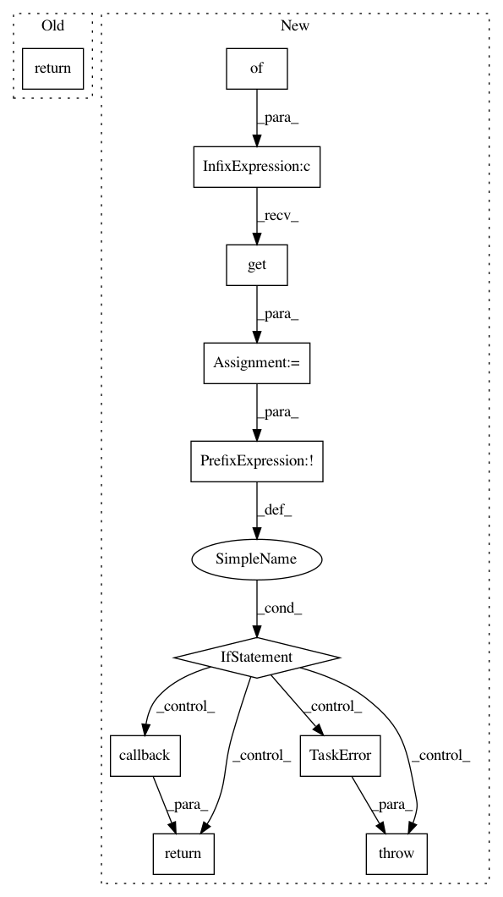

6997d133698bafdbeee767d8cce1d7d3d165cf58,src/python/pants/backend/jvm/subsystems/jvm_tool_mixin.py,JvmToolMixin,tool_classpath_from_products,#JvmToolMixin#Any#Any#Any#,85
Before Change
Returns a list of paths.
return self.lazy_tool_classpath_from_products(products, key, scope)()
def lazy_tool_classpath_from_products(self, products, key, scope):
Get a lazy classpath for the tool previously registered under the key in the given scope.
After Change
Returns a list of paths.
callback_product_map = products.get_data("jvm_build_tools_classpath_callbacks") or {}
callback = callback_product_map.get(scope, {}).get(key)
if not callback:
raise TaskError("No bootstrap callback registered for {key} in {scope}"
.format(key=key, scope=scope))
return callback()
In pattern: SUPERPATTERN
Frequency: 3
Non-data size: 11
Instances
Project Name: pantsbuild/pants
Commit Name: 6997d133698bafdbeee767d8cce1d7d3d165cf58
Time: 2015-05-25
Author: john.sirois@gmail.com
File Name: src/python/pants/backend/jvm/subsystems/jvm_tool_mixin.py
Class Name: JvmToolMixin
Method Name: tool_classpath_from_products
Project Name: pantsbuild/pants
Commit Name: dcb2de22f72596ab848c458d4adafb7471e4a3a5
Time: 2015-04-10
Author: john.sirois@gmail.com
File Name: src/python/pants/backend/jvm/tasks/jvm_tool_task_mixin.py
Class Name: JvmToolTaskMixin
Method Name: tool_classpath
Project Name: pantsbuild/pants
Commit Name: a0a4eba7bf111138c9660e35e34e665961d1e720
Time: 2013-11-25
Author: benjy@foursquare.com
File Name: src/python/twitter/pants/tasks/bootstrap_utils.py
Class Name: BootstrapUtils
Method Name: get_jvm_build_tools_classpath